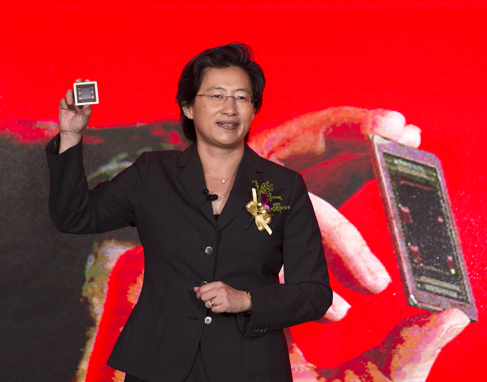

Introduction
Lisa Su’s career spans semiconductor research, product development, business management and the leadership of a major technology company. She earned a doctorate in electrical engineering at MIT and worked at Texas Instruments, IBM and Freescale before joining AMD in 2012. She became president and chief executive officer in 2014 and chair in 2022.[1][4][5]
As a symbol of female empowerment, her engineering and leadership experience and support for women researchers and engineers offer concrete examples of women’s roles in technology.[17][26]
1 From Taiwan and New York to MIT
Su was born in Tainan, Taiwan, moved to the United States with her family as a young child and grew up in Queens, New York. Carnegie’s honoree profile records her attendance at the Bronx High School of Science and her parents’ backgrounds in statistics and accounting. Mathematics and science form a documented thread between her schooling and her later choice of engineering.[2][26]
In her prepared 2026 MIT Commencement remarks, she recalled arriving in fall 1986. Through UROP, she made X-ray lithography mask blanks for a graduate student in Hank Smith’s laboratory, beginning her experience of semiconductor experiments. This is her retrospective account.[18]
Her undergraduate training also included industrial experience. MIT’s 2008 alumni interview records her participation in the 6A program and internships at Analog Devices, which she recalled as an opportunity to encounter engineering in practice. The publication also records a 1992 IEEE IEDM Best Student Paper Award for her work on SOI self-heating during graduate study. Presenting research gave her opportunities to meet people from the semiconductor industry. This period combined laboratory research, industrial practice and experience explaining her findings to a professional audience.[27]
MIT records her electrical engineering bachelor’s degree in 1990, master’s degree in 1991 and doctorate in 1994. Her doctoral work brought her into semiconductor device research and supplied a technical foundation for her subsequent industrial career.[17][4]
2 Device Research and Engineering Management at IBM
MIT retains her doctoral thesis, Extreme-submicrometer silicon-on-insulator (SOI) MOSFETs. It concerns metal-oxide-semiconductor field-effect transistors using silicon-on-insulator technology. The archive names Dimitri A. Antoniadis and James E. Chung as advisers. This was work on semiconductor devices and fabrication rather than application software alone.[4]
From 1994 to 1995, she served on the technical staff at Texas Instruments’ Semiconductor Process and Device Center before moving to IBM. AMD’s official biography records her progression through engineering and business leadership roles there. She eventually became vice president of the Semiconductor Research and Development Center, with responsibilities for silicon technology strategy, joint development alliances and R&D operations.[5]
Carnegie’s profile identifies her as an important participant in IBM’s copper interconnect work. Interconnects link circuits within a chip, and their development involved collaborative engineering. In a 2024 interview with Ben Thompson, she recalled learning through the later stages of a copper interconnect product that manufacturing yield and reliability determine whether a technology becomes a deliverable product.[2][16]
MIT’s interview also records her work on the introduction of IBM’s Cell microprocessor and her role as director of PowerPC Products.[27]
IBM’s research abstract describes the first-generation Cell as a 90-nanometer SOI chip combining a 64-bit Power processor, multiple streaming processors, and memory and input/output control. This was a design in which several kinds of computing modules operated together on one chip. Those details provide technical context for the product project in which she participated, while preserving the distinction between her management responsibilities and the engineering team’s architecture.[28]
In her 2025 Stanford GSB interview, Su recalled serving as technical assistant to IBM CEO Lou Gerstner. She explained that introducing him to new technologies also allowed her to observe how a company of global scale was led. She interpreted the assignment as someone taking a chance on a young employee. Her lesson for other leaders was to give promising people responsibilities they might not yet be fully ready for, together with the support needed to succeed. This is her retrospective interpretation of management development and opportunity.[29][16]
3 From Technology Planning to Business Management
In June 2007, Su joined Freescale Semiconductor as chief technology officer. Its 2010 annual report records that she held the CTO role until August 2009 and became senior vice president and general manager of Networking and Multimedia in September 2008. The positions overlapped for a time, linking technology management with business responsibility.[6]
The business role covered global strategy, marketing and engineering for embedded communications and applications processors. Her responsibilities therefore extended from an R&D roadmap to the coordination of technology and business execution. Freescale’s records and AMD’s subsequent appointment announcement establish that she managed a product business before joining AMD.[6][7]
In a 2008 EDN interview, she said that her doctoral adviser, Antoniadis, helped her think through technical and business situations and advised her to remain technical for as long as possible. Discussing Freescale’s R&D, she described a move from a process-centered approach toward complete solutions, including software, analog technology, systems and packaging. This contemporary account gives specific content to her transition into business responsibilities: customers ultimately use products and applications assembled from several kinds of technology.[30]
AMD announced her appointment on December 15, 2011, with a start date of January 3, 2012. As senior vice president and general manager of Global Business Units, she reported to then-CEO Rory Read and oversaw product strategy, product definition, business planning and execution. The position placed her at the intersection of product technology and company operations.[7]
The console partnerships of 2013 give a concrete picture of her business responsibilities at AMD. On May 2, the company outlined its semi-custom approach: combining existing CPU, graphics and multimedia technology with customer-specific designs. Saeid Moshkelani led the unit and reported to Su, then senior vice president and general manager of Global Business Units. In the announcement, she emphasized combining hardware, software and system knowledge. The reporting relationship places her work within customer projects and product portfolios, beyond technology research alone.[34]
Sony's contemporary PS4 specifications named AMD Jaguar CPU cores and Radeon graphics. AMD's annual filing records semi-custom shipments beginning in the second quarter for PS4 and Xbox One, which launched in the fourth quarter. This work turned reusable technology into products customers could bring to market on a schedule and purchase at volume. Customers paid design-development fees and a purchase price for the chips. The business under her management therefore combined engineering development, customer requirements and delivery schedules.[35][36]
4 Becoming CEO and the Pressures of Transformation
AMD’s board approved her appointment as chief operating officer in June 2014, effective July 1. On October 8, she became president, chief executive officer and a director with immediate effect. As COO, she had already been responsible for integrating business units, sales and global operations. The CEO announcement also acknowledged the transformation groundwork established under Rory Read.[8][9]
The operating difficulties following her appointment are visible in AMD’s 2015 annual results: revenue was US$3.991 billion, down 28%, and the net loss under U.S. generally accepted accounting principles, or GAAP, was US$660 million. AMD primarily attributed the revenue decline to lower client processor sales. These are full-year 2015 figures, rather than a snapshot of the day she became CEO in October 2014.[11][37]
At its May 2015 analyst day, AMD presented a multiyear strategy focused on gaming, immersive platforms and data centers, including plans for the new Zen processor core. Su and the management team had to allocate resources to critical research under financial pressure and turn the long-term roadmap into products with defined release schedules.[10][11]

5 Delivering Zen and High Performance Computing Products
On March 2, 2017, the first three Ryzen 7 desktop processors became available worldwide using the new Zen microarchitecture. AMD’s launch announcement described four years of development. Zen specifies how processor cores organize and execute computation, while Ryzen is a product brand for personal computers; the two terms refer to different things.[12]
On June 20 that year, AMD launched the first EPYC 7000 data center processors, bringing Zen into servers. Its announcement listed server manufacturers, software companies and cloud partners, showing the collaborative platform and software work involved in delivering the products.[13]
The launches brought AMD’s strategy to desktop and server products. Su led direction, investment and execution, while teams and partners developed the chips, software and platforms.[12][13]
Progress in the product roadmap subsequently appeared in full-year operating results. AMD's 2017 Form 10-K records both periods in the same financial table: 2015 revenue of US$3.991 billion and a GAAP net loss of US$660 million; 2017 revenue of US$5.329 billion and GAAP net income of US$43 million. Both years contained 52 weeks. The move from an annual loss to a still-modest profit provides a verifiable operating milestone in the transformation during Su's CEO tenure.[37]
The improvement also involved factors beyond product launches. AMD attributed annual revenue growth mainly to Computing and Graphics. Higher sales and the absence of the prior year's wafer-supply-agreement charge helped improve margins and operating income, partly offset by higher operating expenses. Su called 2017 an inflection point. The financial record describes changes in the product mix, market demand, costs and supply arrangements together, rather than isolating a single product as the cause of profitability.[38]
Second-generation EPYC took that roadmap into a new architectural phase in 2019. AMD had described its chiplet approach in November 2018: Infinity Fabric linked separate pieces of silicon within one package, with 7-nanometer technology for compute cores and a mature 14-nanometer process for input/output functions. Different parts could use processes suited to their tasks. The announcement explicitly identified TSMC's 7-nanometer technology, while Su explained the development through multiyear investment in hardware and software roadmaps.[39]
On August 7, 2019, the second-generation EPYC family, codenamed Rome, launched with up to 64 Zen 2 cores. The following day, Google's own announcement confirmed use for internal workloads and described planned virtual machines for cloud customers. Moving from an architectural announcement to customer adoption required chip design, manufacturing partners and customer systems to work together. The long-term product direction overseen by the CEO ultimately had to demonstrate its value in customers' operating environments.[40][41]
6 Acquisition Integration and the Responsibilities of the Chair
On February 14, 2022, AMD completed its acquisition of Xilinx, first announced in October 2020 as an all-stock transaction. Xilinx added FPGAs, adaptive system-on-chips, AI engines and software capabilities to AMD’s portfolio. Victor Peng joined the leadership team to lead the new business organization.[14]
The same day, AMD’s board elected Su as chair, while former chair John Caldwell became lead independent director. She continued as president and CEO, combining executive management with leadership of the board. Independent directors and their governance responsibilities remained part of the company’s structure.[1][15]
This stage extended her remit from processor products and an operating transformation to integration following a major acquisition, a broader technology portfolio and board governance. Completion of the transaction is a documented event; realizing its intended benefits requires sustained organizational execution and subsequent operating results.[14][15]
Beyond Xilinx, AMD used acquisitions to broaden its data center capabilities. The Pensando transaction completed in May 2022, with an announced value of approximately US$1.9 billion, added data processing units, or DPUs, and associated software. The team joined the organization led by Forrest Norrod. Su, by then chair and CEO, explained the addition as giving cloud, enterprise and edge customers a broader range of computing options for their workloads. The product remit she led now extended beyond processor performance into networking, software and organizational integration.[45]
AMD completed the ZT Systems acquisition in March 2025, adding rack-level design and customer deployment expertise alongside its CPUs, GPUs, networking chips and ROCm software. In October, it completed the sale of the infrastructure manufacturing business to Sanmina while retaining design and customer enablement teams and establishing a manufacturing partnership. For the company she led, this arrangement combined systems design expertise with a partner's manufacturing role. Management after completion involved cooperation between teams, system validation and customer deployment, as well as the development of individual chips.[46][47]
7 Technology Decisions and Collaboration
In her 2024 Stratechery interview, Su discussed working with CTO Mark Papermaster and connecting technical capability with business strategy, customers and manufacturing partners. This is her public account of management responsibilities.[16]
In her prepared 2026 MIT Commencement remarks, she recalled AMD’s high performance computing direction and argued that methodically breaking down difficult problems becomes more effective when it is shared across a team.[18]
Large scientific systems further tested AMD's CPU and GPU roadmap. The Frontier partnership announced in 2019 involved AMD, Cray and Oak Ridge National Laboratory, with custom processors, interconnects and a jointly developed software environment. In May 2022, the laboratory reported approximately 1.1 exaflops on the HPL benchmark, or 1.1 quintillion floating-point operations per second. The result depended on chips, the complete machine, software and scientific teams. It also placed the company Su led within scientific projects requiring years of collaboration and support.[42][43]
In November 2024, Lawrence Livermore National Laboratory reported El Capitan at 1.742 exaflops on HPL. Its AMD Instinct MI300A packages combined CPU cores, GPU cores and high-bandwidth memory, within a system developed by the laboratory, HPE and AMD. This measured speed is a different metric from theoretical peak performance. The projects give more concrete context to leadership responsibilities: product roadmaps extend into system integration, customer software and sustained validation, while the measured achievement belongs to the complete system built by the participating organizations.[44]
8 Female Empowerment and Support for Education
On June 8, 2017, she returned to MIT to address its doctoral graduates. She connected the training in thinking and difficult problem solving that she received during her doctorate with her later confidence in making business decisions. She encouraged graduates to take risks and learn from mistakes. The occasion allowed her to draw on her experience as an alumna, engineer and company leader when speaking to a new generation of researchers completing their doctoral work.[31]
In 2021, Su received the IEEE Robert N. Noyce Medal as its first female recipient. The award and her career record provide a concrete milestone in her role as a female technology leader.[5][17]
After receiving it, she donated the US$20,000 prize to the IEEE Women in Engineering Fund, managed by the IEEE Foundation, supporting women engineers.[17]
In 2018, she established the Lisa Su Fellowship Fund at MIT, supporting female graduate students making progress and achieving results in nanotechnology.[3]
In 2022, MIT announced that the MIT.nano building would be named the Lisa T. Su Building. She was the first MIT alumna whose gift led to a building bearing her own name. The facility had opened in 2018.[3]
In 2020, AnitaB.org selected her for its Technical Leadership Abie Award. The organization’s criteria recognize technical achievements with an impact on business or society, together with a commitment to increasing women’s representation in technology. Its announcement planned for recipients to accept their awards and speak at that year’s virtual Grace Hopper Celebration. The honor therefore connected recognition of technical leadership with a forum for women technologists.[32]
AMD’s 2021–22 Corporate Responsibility Report records a partnership with AnitaB.org supporting 25 female students in 2021. Its funding included money associated with Su’s 2020 Abie Award and an additional personal donation. The students received scholarships supporting technical education, attended the Grace Hopper Celebration, undertook coaching and joined an online discussion with AMD women technologists about career development and personal experiences. The program combined financial assistance, peer networks and career guidance. These are the specific activities documented in the company’s account of its implementation.[33]
9 Professional Recognition and Industry Responsibilities
Alongside the IEEE medal discussed earlier, SIA’s official recipient list records her as the 2020 Robert N. Noyce Award honoree. The award recognizes leaders’ contributions to the semiconductor industry in technology or public policy. SIA’s industry award and IEEE’s medal are conferred by separate institutions, supplying distinct records of professional recognition.[48][17]
Her responsibilities within the industry have also broadened. On November 20, 2025, SIA announced her election as board chair; its current governance page identifies her as the 2026 chair. In the announcement, she described working with fellow board members to strengthen semiconductor competitiveness and innovation. SIA works with legislative and executive institutions on industry policy. Alongside managing AMD, she therefore holds a leadership role in an organization bringing together multiple semiconductor companies.[49][50]
10 Current Responsibilities Results and Recent Developments
As of October 13, 2026, AMD’s governance materials identify Su as chair, president and chief executive officer. On October 8, the White House announced her receipt of the U.S. National Medal of Science. The awarding institution recognized her leadership in semiconductor engineering and high performance computing.[1][19]
AMD reported fiscal 2025 revenue of US$34.639 billion, up 34%, and GAAP net income of US$4.335 billion. Its latest reported quarter was the second quarter ended June 27, 2026, with revenue of US$11.536 billion, up 50%, and GAAP net income of US$2.297 billion. The annual and quarterly figures cover different periods.[20][21]
Second-quarter Data Center revenue was US$6.718 billion, up 107%. The segment includes EPYC CPUs, Instinct GPUs and other products, so its entire revenue cannot be described as AI GPU sales. Third-quarter results were scheduled for November 3 and remained unpublished at the cutoff. The results document changes in AMD during her tenure and reflect the work of teams and partners.[21][22]
Recent work extends to AI research and system platforms. On September 28, 2026, AMD announced an agreement to acquire World Labs in an approximately US$8.2 billion all-stock transaction, expected to close by year-end subject to regulatory and other conditions. On October 12, it introduced the Helion open rack blueprint for agentic AI, with partner configurations expected in November. These were a pending transaction and a future availability plan, rather than fully completed outcomes at the cutoff.[23][24]
11 Competition Supply Chains and Policy Constraints
AMD’s second-quarter 2026 Form 10-Q identifies competition from Nvidia’s data center GPUs and software ecosystem, Intel’s CPU pricing and customers’ own AI chips. These are disclosed risks rather than predetermined outcomes.[25]
AMD relies on TSMC for CPUs and GPUs at 7 nanometers and below. Process capability, wafers, yield, third-party packaging and components affect delivery, making supply relationships part of product execution.[25]
MI308 export restrictions produced approximately US$440 million of net inventory and related charges for fiscal 2025, distinct from the initial US$800 million second-quarter charge. Operating results therefore also reflect regulatory and supply constraints.[20][21][25]
A life in milestones
- 1986
Entered MIT in the fall as recalled in her 2026 remarks [18]
- 1990 1991 1994
- 1994–1995
Worked at Texas Instruments in semiconductor process and device engineering [5]
- 1995–2007
- 2007-06
Joined Freescale as chief technology officer [6]
- 2008-09
Began leading Freescale Networking and Multimedia [6]
- 2012-01-03
Joined AMD as senior vice president and general manager of Global Business Units [7]
- 2013-05-02
AMD announced the semi-custom business within her Global Business Units organization [34]
- 2014-07-01
Became AMD chief operating officer [8]
- 2014-10-08
Became AMD president chief executive officer and a director [9]
- 2017-03-02
AMD teams launched the first Ryzen 7 processors [12]
- 2017-06-20
AMD launched the first EPYC data center processors [13]
- FY 2017
AMD reported full-year GAAP net income of US$43 million [37]
- 2018
Established an MIT fellowship fund supporting female nanotechnology graduate students [3]
- 2019-08-07
AMD launched second-generation EPYC processors [40]
- 2020
- 2021
- 2021
An AMD and AnitaB.org program supported 25 female students [33]
- 2022-02-14
- 2022-04-07
MIT announced the naming of the MIT.nano building in her honor [3]
- 2022-05-26
AMD completed the Pensando acquisition [45]
- 2025-03-31
AMD completed the ZT Systems acquisition [46]
- 2025-10-27
AMD completed the sale of ZT manufacturing while retaining design teams [47]
- 2025-11-20
Elected chair of the SIA board [49]
- 2026-05-28
Delivered MIT Commencement remarks [18]
- 2026-10-08
Received the U.S. National Medal of Science [19]
Sources
Numbered citations link to the original records below. Corporate statements, institutional records and published reporting are read in their respective contexts.
- AMD Board of Directors Lisa T Su biography
- Carnegie 2020 Great Immigrants Lisa Su
- MIT to name Building 12 home of MIT nano in honor of Lisa Su
- MIT thesis Extreme-submicrometer silicon-on-insulator SOI MOSFETs
- AMD Dr Lisa Su executive biography
- Freescale Semiconductor 2010 Form 10-K
- AMD to appoint Dr Lisa Su as senior vice president and general manager Global Business Units
- AMD Form 8-K COO appointment effective July 1 2014
- AMD appoints Dr Lisa Su as president and chief executive officer
- AMD outlines sharpened focus at 2015 Financial Analyst Day
- AMD reports 2015 fourth quarter and annual results
- AMD Ryzen 7 desktop processors available worldwide
- AMD EPYC datacenter processor launches with server ecosystem support
- AMD completes acquisition of Xilinx
- AMD Board of Directors announces new appointments
- Ben Thompson An interview with AMD CEO Lisa Su about solving hard problems
- IEEE Member Highlight Lisa Su
- MIT Commencement address by Lisa Su
- White House National Medals of Science and National Medals of Technology and Innovation
- AMD reports fourth quarter and full year 2025 financial results
- AMD reports second quarter 2026 financial results
- AMD to report fiscal third quarter 2026 financial results
- AMD to acquire World Labs to advance the future of AI compute
- Introducing AMD Helion agentic AI compute at rack scale
- AMD second quarter 2026 Form 10-Q
- Lisa Su to deliver MIT 2026 Commencement address
- Lisa Su: Senior Vice President and CTO of Freescale Semiconductor — MTL Micronotes
- The design and implementation of a first-generation CELL processor
- Dream Big: Lisa Su Talks Chips, Curiosity, and Chance
- Voices: Freescale’s Lisa Su: embedding future growth
- Lisa Su urges doctoral graduates to dream big and change the world
- AnitaB.org Recognizes Five Inspirational Women Technologists with 2020 Abie Award Honor
- 2021-22 AMD Corporate Responsibility Report Summary
- AMD to Create Tailored Products Integrating Customer-Specific IP Through Semi-Custom Business Unit
- Sony Computer Entertainment Introduces PlayStation 4
- AMD Fiscal 2013 Form 10-K
- AMD Fiscal 2017 Form 10-K
- AMD Reports Fourth Quarter and Annual 2017 Financial Results
- AMD Takes High Performance Datacenter Computing to the Next Horizon
- Second Generation AMD EPYC Processors Set New Standard for the Modern Datacenter
- AMD EPYC processors come to Google and to Google Cloud
- AMD EPYC CPUs Radeon Instinct GPUs and ROCm Open Source Software to Power Frontier at Oak Ridge
- Frontier supercomputer debuts as worlds fastest breaking exascale barrier
- Lawrence Livermore National Laboratory El Capitan verified as worlds fastest supercomputer
- AMD Expands Data Center Solutions Capabilities with Acquisition of Pensando
- AMD Completes Acquisition of ZT Systems
- AMD Completes Divestiture of ZT Systems Data Center Infrastructure Manufacturing Business to Sanmina
- Semiconductor Industry Association Award Recipients
- Dr Lisa Su AMD Chair and CEO Elected Chair of Semiconductor Industry Association
- Semiconductor Industry Association Board Dr Lisa Su
Photo credits
Lisa Su at SXSW in Austin Texas on March 11 2024
Fuzheado · Original record · CC BY 4.0
Lisa Su holding a chip photographed on June 3 2015
Gene Wang · Original record · CC BY 2.0